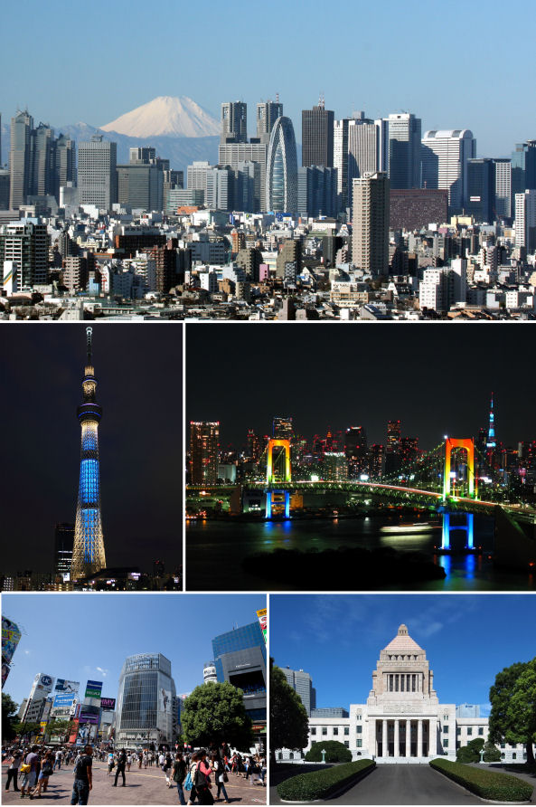

| Токио |
Япония |
 |
То́кио — столица Японии, её административный, финансовый, промышленный и политический центр. Крупнейшая городская экономика мира. Расположен в юго-восточной части острова Хонсю, на равнине Канто в бухте Токийского залива Тихого океана. Помимо столицы, Токио также является одной из сорока семи префектур страны. Площадь префектуры составляет 2188,67 км², население — 13 742 906 человек (1 октября 2017), плотность населения — 6279,11 чел./км². |
|